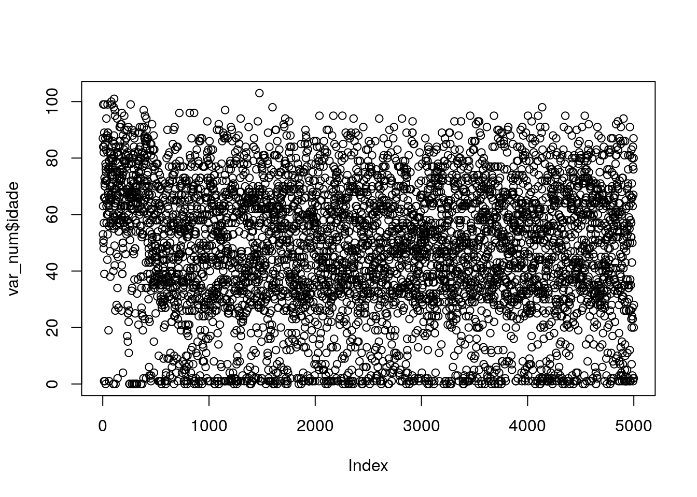
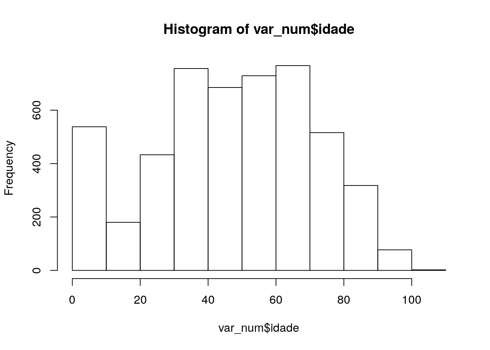
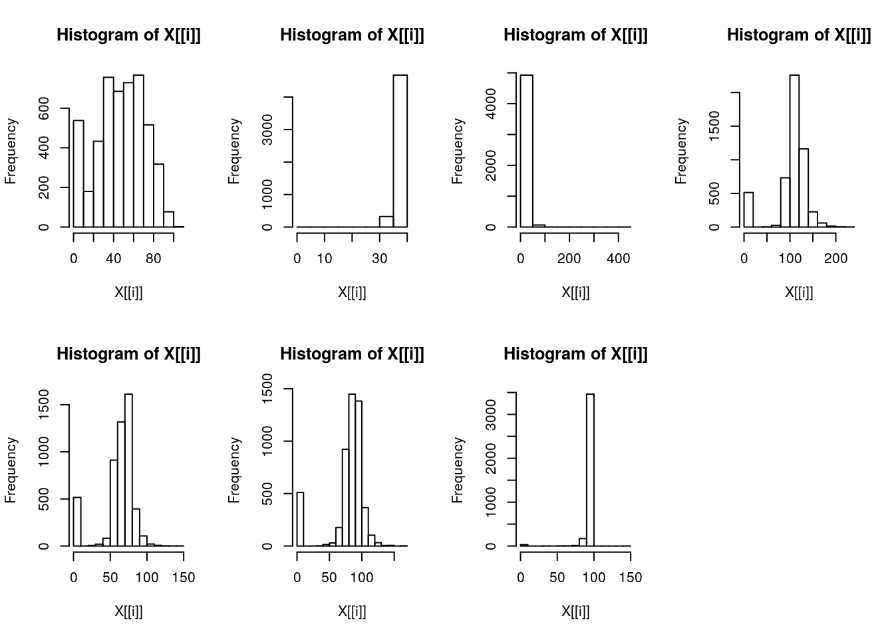
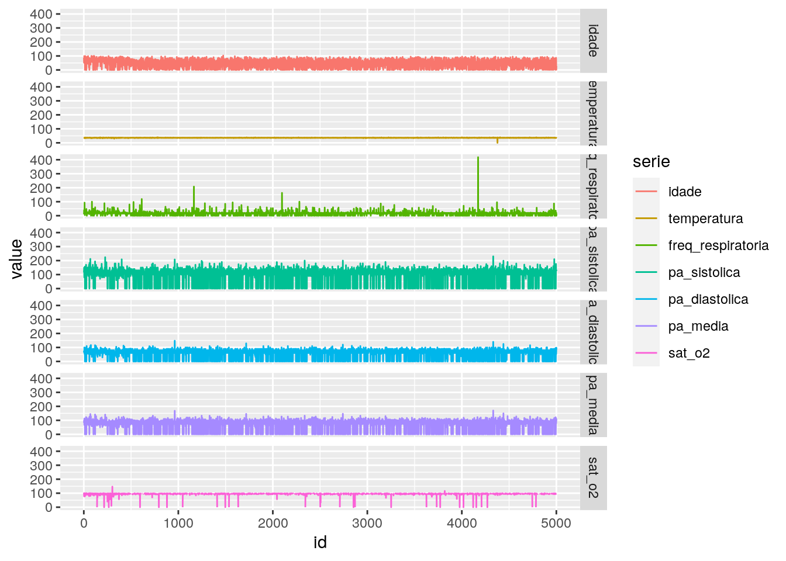

Comandos das aulas do curso
Abaixo estão os comandos do R utilizados durante as aulas.
Módulo 1 - Probabilidade
- Aula 01 - \(01/09/2020\):
Primiro exemplo
x <- c(1,2,3,4,5,6,7,80)
x[1] 1 2 3 4 5 6 7 80class(x)[1] "numeric"x[8][1] 80X <- matrix(data= c(1,2,3,4),ncol = 2, byrow=TRUE)
X [,1] [,2]
[1,] 1 2
[2,] 3 4Y <- matrix(c(2,4,5,8,6,8),ncol=2, byrow = TRUE)
Y [,1] [,2]
[1,] 2 4
[2,] 5 8
[3,] 6 8Y%*%X [,1] [,2]
[1,] 14 20
[2,] 29 42
[3,] 30 44Y[1,2][1] 4Funções estatística básica
x <- rnorm(100)
head(x,n=3)[1] 0.4801444 -1.0053848 1.6321423tail(x,n=3)[1] -1.0726481 -0.2368901 -1.5007479#### Media = somatório x_i/n
media <- function(x){
soma = 0
for(i in 1:length(x))
soma = soma + x[i]
media = soma/length(x)
return(media)
}
media(x)[1] -0.1148552mean(x)[1] -0.1148552Intervalo de confiança
# LI = media - Z*desvio_padrão/raiz(n)
# LS = media + Z*desvio_padrão/raiz(n)
IC <- function(x, conf = 0.95){
avg = media(x)
z = c(-qnorm(conf),qnorm(conf))
dp = sd(x)
n = length(x)
raizn <- sqrt(n)
#li = avg - z*(dp/raizn)
#ls = avg + z*(dp/raizn)
ic <- avg + z*(dp/raizn)
return(paste("IC(95%)= ", ic))
}
IC(x)[1] "IC(95%)= -0.297560518970988" "IC(95%)= 0.0678500928374349"Exemplo de acesso a dados
### Listando arquivos
dir(pattern = '.csv')[1] "hospital.csv" "web_data.csv"dados <- read.csv("hospital.csv",
header = TRUE, sep ='\t')
head(dados) idade setor temperatura freq_respiratoria pa_sistolica pa_diastolica pa_media
1 87 UTIG 36.0 18 128 75 93
2 53 1AP2 35.4 14 117 67 84
3 63 UTIG 36.4 40 149 75 100
4 84 UTIG 36.4 40 149 75 100
5 99 4AP2 36.3 16 80 60 67
6 50 UTIG 34.4 17 140 100 113
sat_o2 alta.motivo
1 91 Obito
2 100 Obito
3 78 Obito
4 78 Obito
5 94 Obito
6 94 Obitodim(dados)[1] 5001 9str(dados)'data.frame': 5001 obs. of 9 variables:
$ idade : int 87 53 63 84 99 50 51 48 82 57 ...
$ setor : Factor w/ 17 levels "","1AP1","1AP2",..: 16 3 16 16 12 16 3 3 16 15 ...
$ temperatura : num 36 35.4 36.4 36.4 36.3 34.4 35 36 34 37.6 ...
$ freq_respiratoria: int 18 14 40 40 16 17 18 93 19 26 ...
$ pa_sistolica : int 128 117 149 149 80 140 100 100 112 156 ...
$ pa_diastolica : int 75 67 75 75 60 100 60 60 59 50 ...
$ pa_media : int 93 84 100 100 67 113 73 73 77 85 ...
$ sat_o2 : int 91 100 78 78 94 94 96 93 100 97 ...
$ alta.motivo : Factor w/ 2 levels "Melhorado","Obito": 2 2 2 2 2 2 2 2 2 2 ...Sumário dos dados
media(dados$idade)[1] 47.55209names(dados)[1] "idade" "setor" "temperatura"
[4] "freq_respiratoria" "pa_sistolica" "pa_diastolica"
[7] "pa_media" "sat_o2" "alta.motivo" var_num <- dados[,c(1,3:8)]
str(var_num)'data.frame': 5001 obs. of 7 variables:
$ idade : int 87 53 63 84 99 50 51 48 82 57 ...
$ temperatura : num 36 35.4 36.4 36.4 36.3 34.4 35 36 34 37.6 ...
$ freq_respiratoria: int 18 14 40 40 16 17 18 93 19 26 ...
$ pa_sistolica : int 128 117 149 149 80 140 100 100 112 156 ...
$ pa_diastolica : int 75 67 75 75 60 100 60 60 59 50 ...
$ pa_media : int 93 84 100 100 67 113 73 73 77 85 ...
$ sat_o2 : int 91 100 78 78 94 94 96 93 100 97 ...summary(dados$idade) Min. 1st Qu. Median Mean 3rd Qu. Max.
0.00 32.00 49.00 47.55 66.00 103.00 for(i in 1:length(names(var_num))){
print(summary(var_num[i]))
} idade
Min. : 0.00
1st Qu.: 32.00
Median : 49.00
Mean : 47.55
3rd Qu.: 66.00
Max. :103.00
temperatura
Min. : 0.00
1st Qu.:35.70
Median :36.00
Mean :36.02
3rd Qu.:36.30
Max. :39.70
NA's :3
freq_respiratoria
Min. : 0.0
1st Qu.: 16.0
Median : 18.0
Mean : 17.2
3rd Qu.: 19.0
Max. :418.0
NA's :5
pa_sistolica
Min. : 0.0
1st Qu.:100.0
Median :120.0
Mean :107.2
3rd Qu.:130.0
Max. :230.0
NA's :2
pa_diastolica
Min. : 0.00
1st Qu.: 60.00
Median : 70.00
Mean : 65.75
3rd Qu.: 80.00
Max. :148.00
NA's :2
pa_media
Min. : 0.00
1st Qu.: 77.00
Median : 87.00
Mean : 79.52
3rd Qu.: 93.00
Max. :170.00
NA's :2
sat_o2
Min. : 0.00
1st Qu.: 94.00
Median : 96.00
Mean : 94.78
3rd Qu.: 98.00
Max. :147.00
NA's :1315 Gráficos
plot(var_num$idade)
hist(var_num$idade)
par(mfrow=c(2,4))
lapply(var_num,hist)$idade
$breaks
[1] 0 10 20 30 40 50 60 70 80 90 100 110
$counts
[1] 538 180 433 756 685 729 767 516 318 77 2
$density
[1] 0.010757848 0.003599280 0.008658268 0.015116977 0.013697261 0.014577085
[7] 0.015336933 0.010317936 0.006358728 0.001539692 0.000039992
$mids
[1] 5 15 25 35 45 55 65 75 85 95 105
$xname
[1] "X[[i]]"
$equidist
[1] TRUE
attr(,"class")
[1] "histogram"
$temperatura
$breaks
[1] 0 5 10 15 20 25 30 35 40
$counts
[1] 1 0 0 0 0 0 323 4674
$density
[1] 4.001601e-05 0.000000e+00 0.000000e+00 0.000000e+00 0.000000e+00
[6] 0.000000e+00 1.292517e-02 1.870348e-01
$mids
[1] 2.5 7.5 12.5 17.5 22.5 27.5 32.5 37.5
$xname
[1] "X[[i]]"
$equidist
[1] TRUE
attr(,"class")
[1] "histogram"
$freq_respiratoria
$breaks
[1] 0 50 100 150 200 250 300 350 400 450
$counts
[1] 4926 66 1 1 1 0 0 0 1
$density
[1] 1.971978e-02 2.642114e-04 4.003203e-06 4.003203e-06 4.003203e-06
[6] 0.000000e+00 0.000000e+00 0.000000e+00 4.003203e-06
$mids
[1] 25 75 125 175 225 275 325 375 425
$xname
[1] "X[[i]]"
$equidist
[1] TRUE
attr(,"class")
[1] "histogram"
$pa_sistolica
$breaks
[1] 0 20 40 60 80 100 120 140 160 180 200 220 240
$counts
[1] 513 0 4 26 732 2258 1161 226 60 13 4 2
$density
[1] 0.005131026 0.000000000 0.000040008 0.000260052 0.007321464 0.022584517
[7] 0.011612322 0.002260452 0.000600120 0.000130026 0.000040008 0.000020004
$mids
[1] 10 30 50 70 90 110 130 150 170 190 210 230
$xname
[1] "X[[i]]"
$equidist
[1] TRUE
attr(,"class")
[1] "histogram"
$pa_diastolica
$breaks
[1] 0 10 20 30 40 50 60 70 80 90 100 110 120 130 140 150
$counts
[1] 516 1 6 20 83 911 1317 1612 394 107 21 7 2 1 1
$density
[1] 0.010322064 0.000020004 0.000120024 0.000400080 0.001660332 0.018223645
[7] 0.026345269 0.032246449 0.007881576 0.002140428 0.000420084 0.000140028
[13] 0.000040008 0.000020004 0.000020004
$mids
[1] 5 15 25 35 45 55 65 75 85 95 105 115 125 135 145
$xname
[1] "X[[i]]"
$equidist
[1] TRUE
attr(,"class")
[1] "histogram"
$pa_media
$breaks
[1] 0 10 20 30 40 50 60 70 80 90 100 110 120 130 140 150 160 170
$counts
[1] 511 0 0 2 15 29 176 922 1448 1382 366 103 32 5 6
[16] 0 2
$density
[1] 0.010222044 0.000000000 0.000000000 0.000040008 0.000300060 0.000580116
[7] 0.003520704 0.018443689 0.028965793 0.027645529 0.007321464 0.002060412
[13] 0.000640128 0.000100020 0.000120024 0.000000000 0.000040008
$mids
[1] 5 15 25 35 45 55 65 75 85 95 105 115 125 135 145 155 165
$xname
[1] "X[[i]]"
$equidist
[1] TRUE
attr(,"class")
[1] "histogram"
$sat_o2
$breaks
[1] 0 10 20 30 40 50 60 70 80 90 100 110 120 130 140 150
$counts
[1] 31 0 0 2 0 4 3 12 170 3462 0 1 0 0 1
$density
[1] 8.410201e-04 0.000000e+00 0.000000e+00 5.425936e-05 0.000000e+00
[6] 1.085187e-04 8.138904e-05 3.255562e-04 4.612046e-03 9.392295e-02
[11] 0.000000e+00 2.712968e-05 0.000000e+00 0.000000e+00 2.712968e-05
$mids
[1] 5 15 25 35 45 55 65 75 85 95 105 115 125 135 145
$xname
[1] "X[[i]]"
$equidist
[1] TRUE
attr(,"class")
[1] "histogram"
ggplot2
lattice
library(ggplot2)
var_num$id <- 1:dim(var_num)[1]
df <- reshape2::melt(var_num, id.vars = 'id', variable.name = "serie")
ggplot(df, aes(id,value)) +
geom_line(aes(colour = serie)) +
facet_grid(serie ~ .)
Probabilidade
Exemplo de espaço amostra
## Lançamento de dois dados
6^2[1] 36amostral <- 1:6
amostral[1] 1 2 3 4 5 6n <- 3000
sorteio <- NULL
for(i in 1:n)
sorteio <- c(sorteio,paste(sample(x = amostral,
replace = TRUE,
size = 2),collapse =""))
length(unique(sorteio))[1] 36sorteio <- sort(unique(sorteio))
sorteio [1] "11" "12" "13" "14" "15" "16" "21" "22" "23" "24" "25" "26" "31" "32" "33"
[16] "34" "35" "36" "41" "42" "43" "44" "45" "46" "51" "52" "53" "54" "55" "56"
[31] "61" "62" "63" "64" "65" "66"## Lançamento de três dados
6^3[1] 216n <- 3000
sorteio2 <- NULL
for(i in 1:n)
sorteio2 <- c(sorteio2,paste(sample(x = amostral,
replace = TRUE,
size = 3),collapse =""))
length(unique(sorteio2))[1] 216sorteio2 <- sort(unique(sorteio2))
sorteio2 [1] "111" "112" "113" "114" "115" "116" "121" "122" "123" "124" "125" "126"
[13] "131" "132" "133" "134" "135" "136" "141" "142" "143" "144" "145" "146"
[25] "151" "152" "153" "154" "155" "156" "161" "162" "163" "164" "165" "166"
[37] "211" "212" "213" "214" "215" "216" "221" "222" "223" "224" "225" "226"
[49] "231" "232" "233" "234" "235" "236" "241" "242" "243" "244" "245" "246"
[61] "251" "252" "253" "254" "255" "256" "261" "262" "263" "264" "265" "266"
[73] "311" "312" "313" "314" "315" "316" "321" "322" "323" "324" "325" "326"
[85] "331" "332" "333" "334" "335" "336" "341" "342" "343" "344" "345" "346"
[97] "351" "352" "353" "354" "355" "356" "361" "362" "363" "364" "365" "366"
[109] "411" "412" "413" "414" "415" "416" "421" "422" "423" "424" "425" "426"
[121] "431" "432" "433" "434" "435" "436" "441" "442" "443" "444" "445" "446"
[133] "451" "452" "453" "454" "455" "456" "461" "462" "463" "464" "465" "466"
[145] "511" "512" "513" "514" "515" "516" "521" "522" "523" "524" "525" "526"
[157] "531" "532" "533" "534" "535" "536" "541" "542" "543" "544" "545" "546"
[169] "551" "552" "553" "554" "555" "556" "561" "562" "563" "564" "565" "566"
[181] "611" "612" "613" "614" "615" "616" "621" "622" "623" "624" "625" "626"
[193] "631" "632" "633" "634" "635" "636" "641" "642" "643" "644" "645" "646"
[205] "651" "652" "653" "654" "655" "656" "661" "662" "663" "664" "665" "666"Exemplo definição clássica de probab.
### E1= (1,1)
library(prob)
#a <- urnsamples(amostral,
# size = 2,
# replace = TRUE)
amostral[1] 1 2 3 4 5 6sorteio2 [1] "111" "112" "113" "114" "115" "116" "121" "122" "123" "124" "125" "126"
[13] "131" "132" "133" "134" "135" "136" "141" "142" "143" "144" "145" "146"
[25] "151" "152" "153" "154" "155" "156" "161" "162" "163" "164" "165" "166"
[37] "211" "212" "213" "214" "215" "216" "221" "222" "223" "224" "225" "226"
[49] "231" "232" "233" "234" "235" "236" "241" "242" "243" "244" "245" "246"
[61] "251" "252" "253" "254" "255" "256" "261" "262" "263" "264" "265" "266"
[73] "311" "312" "313" "314" "315" "316" "321" "322" "323" "324" "325" "326"
[85] "331" "332" "333" "334" "335" "336" "341" "342" "343" "344" "345" "346"
[97] "351" "352" "353" "354" "355" "356" "361" "362" "363" "364" "365" "366"
[109] "411" "412" "413" "414" "415" "416" "421" "422" "423" "424" "425" "426"
[121] "431" "432" "433" "434" "435" "436" "441" "442" "443" "444" "445" "446"
[133] "451" "452" "453" "454" "455" "456" "461" "462" "463" "464" "465" "466"
[145] "511" "512" "513" "514" "515" "516" "521" "522" "523" "524" "525" "526"
[157] "531" "532" "533" "534" "535" "536" "541" "542" "543" "544" "545" "546"
[169] "551" "552" "553" "554" "555" "556" "561" "562" "563" "564" "565" "566"
[181] "611" "612" "613" "614" "615" "616" "621" "622" "623" "624" "625" "626"
[193] "631" "632" "633" "634" "635" "636" "641" "642" "643" "644" "645" "646"
[205] "651" "652" "653" "654" "655" "656" "661" "662" "663" "664" "665" "666"dado1 <- substr(sorteio,1,1)
dado2 <- substr(sorteio,2,2)
iguais <- ifelse(dado1 == dado2, sorteio,"excluir")
iguais [1] "11" "excluir" "excluir" "excluir" "excluir" "excluir" "excluir"
[8] "22" "excluir" "excluir" "excluir" "excluir" "excluir" "excluir"
[15] "33" "excluir" "excluir" "excluir" "excluir" "excluir" "excluir"
[22] "44" "excluir" "excluir" "excluir" "excluir" "excluir" "excluir"
[29] "55" "excluir" "excluir" "excluir" "excluir" "excluir" "excluir"
[36] "66" iguais <- iguais[iguais != "excluir"]
PE1 <- length(iguais)/length(sorteio)
PE1[1] 0.1666667

Este conteúdo está disponível por meio da Licença Creative Commons 4.0